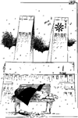

Fredag 8. desember
Fredag 8. desember
| LEDERE |
Morgen: Vettløs liberalisering Tyskland Aften: Svekket ordfører, uryddig bystyre |
Dagens Inge:  |
| KOMMENTAR |
President Clinton på opptur BEDRE OG BEDRE: President Bill Clinton har omsider fått litt vind i ryggen i sine konfrontasjoner med Kongressen, og gode meningsmålinger hjelper på humøret. PER EGIL HEGGE Kommentatoren er kulturredaktør i Aftenposten.
Men ingen nordmenn var der |
| I DAG |
Myten om de
tomme pengeskrin KULTUREN - får den for lite eller har den for meget? PREBEN MUNTHE Professor i sosialøkonomi, UiO |
|
KRONIKK |
Studentersang og kulturhistorie ANNE JORUNN KYDLAND LYSDAHL Det var kvinnehistorie som ble skrevet da Kvindelige Studenters Sangforening ble stiftet i dag for 100 år siden. Den norske Studentersangforening har rundet de 150. Kronikkforfatteren setter korsangen inn i en kulturhistorisk sammenheng. Hun er ansatt ved Norsk Musikksamling, og står for Universitetsbibliotekets utstilling "Sangen har lysning". Boken med samme navn er en del av et større nordisk forskningsprosjekt.
|
Bakgrunn/Kommentar: Arkiv